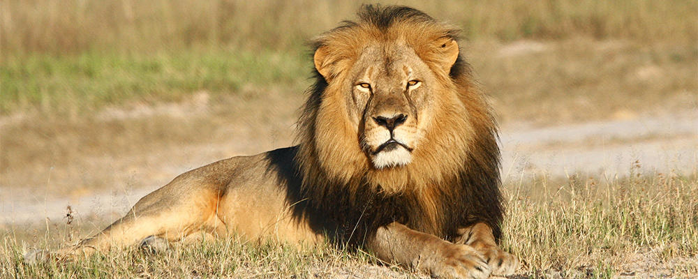

Lion

Introduction
Le Lion (Panthera leo) est l'un des grands félins les plus emblématiques de la planète. Surnommé « roi de la savane », il est célèbre pour sa majestueuse crinière (chez les mâles) et son mode de vie social unique parmi les félins. Il vit principalement en Afrique subsaharienne, avec une petite population dans la forêt de Gir en Inde.
Alimentation
Le Lion est un carnivore apex. Son régime alimentaire comprend :
- Gnous et zèbres (proies principales)
- Buffles et girafes
- Phacochères et impalas
- Charognes en cas de nécessité
- Petits mammifères pour les lionceaux
Caractéristiques Physiques
- Longueur : 140 à 250 cm (sans la queue)
- Poids : 120 à 250 kg selon le sexe
- Crinière sombre et imposante chez le mâle adulte
- Robe de couleur fauve à beige
- Puissantes griffes rétractiles et mâchoires très fortes
Statut de Conservation
Le Lion est classé Vulnérable sur la liste rouge de l'UICN. Les menaces incluent :
- Perte et fragmentation de l'habitat
- Conflits avec les éleveurs locaux
- Braconnage et trophées illégaux
- Diminution des proies naturelles
Habitat et Distribution
Le Lion prospère dans les milieux ouverts chauds. On le trouve principalement dans :
- Les savanes herbeuses d'Afrique subsaharienne
- Les plaines du Serengeti et du Masai Mara
- Les zones arbustives semi-arides
- La forêt de Gir (Gujarat, Inde) pour le lion asiatique
Comportement Social
- Seul grand félin à vivre en groupes (troupes)
- Une troupe compte généralement 10 à 30 individus
- Les lionnes assurent l'essentiel de la chasse
- Le mâle défend le territoire et protège les petits